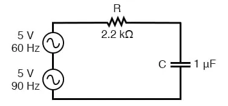
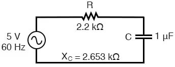
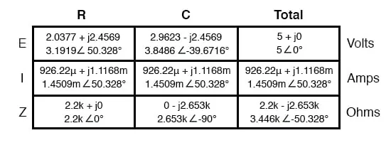
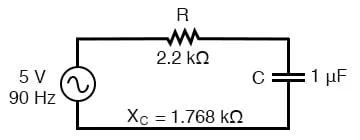
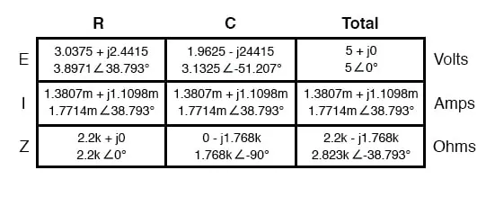
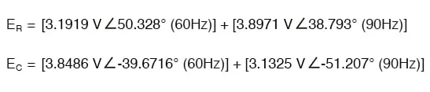

The principle of non-sinusoidal, repeating waveforms being equivalent to a series of sine waves at different frequencies is a fundamental property of waves in general and it has great practical import in the study of AC circuits.
It means that any time we have a waveform that isn’t perfectly sine-wave-shaped, the circuit in question will react as though its having an array of different frequency voltages imposed on it at once.
When an AC circuit is subjected to a source voltage consisting of a mixture of frequencies, the components in that circuit respond to each constituent frequency in a different way. Any reactive component such as a capacitor or an inductor will simultaneously present a unique amount of impedance to each and every frequency present in a circuit.
Thankfully, the analysis of such circuits is made relatively easy by applying the Superposition Theorem, regarding the multiple-frequency source as a set of single-frequency voltage sources connected in series, and analyzing the circuit for one source at a time, summing the results at the end to determine the aggregate total:

Circuit driven by a combination of frequencies: 60 Hz and 90 Hz
Analyzing circuit for 60 Hz source alone:

Circuit for solving 60 Hz

Analyzing the circuit for 90 Hz source alone:

Circuit of solving 90 Hz

Superimposing the voltage drops across R and C, we get:

Because the two voltages across each component are at different frequencies, we cannot consolidate them into a single voltage figure as we could if we were adding together two voltages of different amplitude and/or phase angle at the same frequency.
Complex number notation give us the ability to represent waveform amplitude (polar magnitude) and phase angle (polar angle), but not frequency.
What we can tell from this application of the superposition theorem is that there will be a greater 60 Hz voltage dropped across the capacitor than a 90 Hz voltage. Just the opposite is true for the resistor’s voltage drop.
This is worthy to note, especially in light of the fact that the two source voltages are equal. It is this kind of unequal circuit response to signals of differing frequency that will be our specific focus in the next chapter.
We can also apply the superposition theorem to the analysis of a circuit powered by a non-sinusoidal voltage, such as a square wave. If we know the Fourier series (multiple sine/cosine wave equivalent) of that wave, we can regard it as originating from a series-connected string of multiple sinusoidal voltage sources at the appropriate amplitudes, frequencies, and phase shifts.
Needless to say, this can be a laborious task for some waveforms (an accurate square-wave Fourier Series is considered to be expressed out to the ninth harmonic, or five sine waves in all!), but it is possible. I mention this not to scare you, but to inform you of the potential complexity lurking behind seemingly simple waveforms.
A real-life circuit will respond just the same to being powered by a square wave as being powered by an infinite series of sine waves of odd-multiple frequencies and diminishing amplitudes.
This has been known to translate into unexpected circuit resonances, transformer and inductor core overheating due to eddy currents, electromagnetic noise over broad ranges of the frequency spectrum, and the like. Technicians and engineers need to be made aware of the potential effects of non-sinusoidal waveforms in reactive circuits.
Harmonics are known to manifest their effects in the form of electromagnetic radiation as well.
Studies have been performed on the potential hazards of using portable computers aboard passenger aircraft, citing the fact that computers’ high frequency square-wave “clock” voltage signals are capable of generating radio waves that could interfere with the operation of the aircraft’s electronic navigation equipment.
It’s bad enough that typical microprocessor clock signal frequencies are within the range of aircraft radio frequency bands, but worse yet is the fact that the harmonic multiples of those fundamental frequencies span an even larger range, due to the fact that clock signal voltages are square-wave in shape and not sine-wave.
Electromagnetic “emissions” of this nature can be a problem in industrial applications, too, with harmonics abounding in very large quantities due to (nonlinear) electronic control of motor and electric furnace power.
The fundamental power line frequency may only be 60 Hz, but those harmonic frequency multiples theoretically extend into infinitely high frequency ranges. Low frequency power line voltage and current doesn’t radiate into space very well as electromagnetic energy, but high frequencies do.
Also, capacitive and inductive “coupling” caused by close-proximity conductors is usually more severe at high frequencies. Signal wiring nearby power wiring will tend to “pick up” harmonic interference from the power wiring to a far greater extent than pure sine-wave interference.
This problem can manifest itself in industry when old motor controls are replaced with new, solid-state electronic motor controls providing greater energy efficiency.
Suddenly there may be weird electrical noise being impressed upon signal wiring that never used to be there, because the old controls never generated harmonics, and those high-frequency harmonic voltages and currents tend to inductively and capacitively “couple” better to nearby conductors than any 60 Hz signals from the old controls used to.
REVIEW: